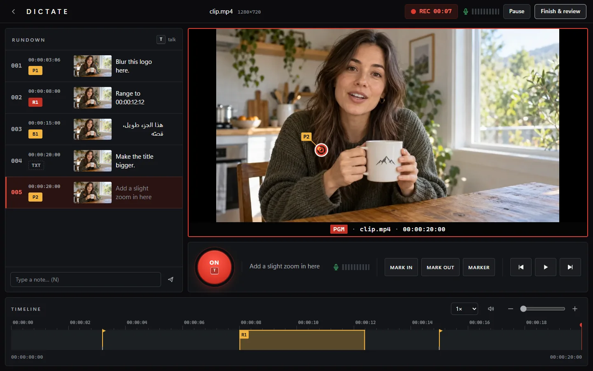

Stop describing it. Show Claude.
Point at anything on your site or video and talk. Claude gets every sentence tied to the exact element or frame.
npx skills add D7y1/dictate
What you say. What Claude gets.
“Make this button bigger and green.”
On your site, Dictate pins the element under your cursor with its selector, text and HTML, takes a screenshot, and follows you from page to page.
### 2. /shop · 0:31 into the session
Page: Halden (http://localhost:3000/shop)
> Make this button bigger and green.
- Pin P1 → button.btn-primary "Shop the roast"
- selector: main .hero > button.btn-primary
- html: <button class="btn-primary">Shop the roast</button>
- element box: 96,312 · 164×40 px in a 1440×900 viewport
- Pointing "this" → button.btn-primary "Shop the roast"
- Screenshot frames/0004-p1.jpg
“Cut from here to where I start talking about the camera.”
On a video, every note lands on its timecode with the spot you pointed at on the frame. Drag to box an area, or press I and O to mark a range.
### 3. 00:01:21.80 – 00:01:48.10
> Cut from here to where I start talking about the camera.
- Range R1: 00:01:21.80 → 00:01:48.10 (26.30s)
- Pointing "here" → x 0.49, y 0.68 · 00:01:21.80
- Frame frames/0007-r1.jpg
“I like this sidebar. Use it on my dashboard.”
Open any other site to show what you like. Dictate tags it as a reference, links it to your page, and measures the font, colors, spacing and radius of what you point at.
### 4. Reference · dribbble.com · 1:12 into the session
Reference: Dashboard concept, a site the user is showing as inspiration. It is not part of this project.
For: Halden admin /dashboard, the page of the user's site they were on just before (note 1 is about it).
> I like this sidebar. Use it on my dashboard.
- Screenshot S2: the area the user dragged around, 280×720 px at 0,64 of a 1440×900 viewport
- at its center: nav.sidebar "Overview Projects Team"
- look: 500 14px/20px Inter · text #1a1a1a · on #fafafa · padding 12px · radius 10px
- Screenshot frames/0011-s2.jpg
Example notes, in the format of a real report.
Point, press T, talk. Then press Send.
-
Type
/dictateIn Claude Code, in any project. Say what you’re reviewing, or give it a video file. The studio opens beside your work.
-
Press T and talk
Hover anything, press T, say what you want, press T again. Your mouse’s back button does the same.
-
Send it
Fix any word it misheard, then send. Claude reads every note with its screenshot, replies with a numbered plan, and starts on the edits.

Talk the way you talk. Even in two languages at once.
- Pointing "هذا" → x 0.31, y 0.42 · 00:02:10.05
- Pointing "here" → x 0.49, y 0.68 · 00:02:11.66
An example transcript. Whisper runs on your own machine and times every word, in Arabic, English or both mixed.
-
Sessions stay in your project
No account and no analytics, and the transcript is made on your computer. Live captions use your browser’s speech recognition, which may send audio to Google or Microsoft. Read the details.
-
You can’t lose a take
Everything is written to disk as it happens. Close the window early and Claude gets what you recorded, marked as a draft.
-
Mouse only, if you like
Move talking, pins and playback to a key, the middle button or a side button, and review without touching the keyboard.
One line. That’s the install.
npx skills add D7y1/dictate
You need Node 20 or newer and Chrome or Edge. Your first review sets up speech to text in the background, up to 3 GB once. That needs Python 3.9 or newer, and live captions cover until it’s ready.
Website reviews also need the extension. Chrome makes you add it yourself, once, and the studio walks you through it.